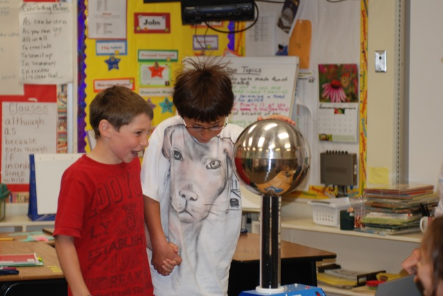
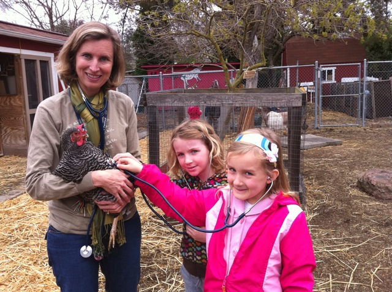
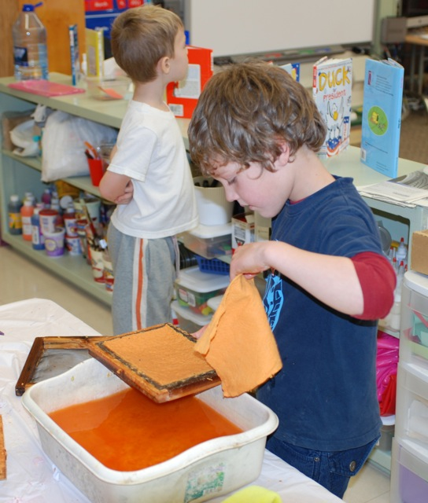

May 2011 PiE Newsletter
PiE Supports Science! | |
| Hands-On Science Enriches Our Kids' Education |

Science programs in our PAUSD elementary
schools receive critical funding from Partners in Education (PiE),
enhancing the hands-on, experiential learning process for every student.
About half of the elementary schools in the district
opt to use PiE dollars to partner with the education program at the
Palo Alto Junior Museum, which provides instructors in life science,
earth science, and physical science specialties. These teachers present innovative units covering a range of topics from cell anatomy to saturation. "I always learn so much when Arad [Kedar] comes," enthuses a Duveneck fifth grader. "I love his interactive style of teaching."
One example of the partnership between
PiE and the Junior Museum is when Palo Alto Junior Museum scientist Bill
Gutoff visits Joan Hobstetter's kindergarten classroom at Addison to
share the centuries-old experience of making paper. They compare various fibers under microscopes, and prepare a pre-mixed mash for flattening and drying. In
a subsequent session, they work on paper engineering, competing in a
bridge-building contest that explains stress and load. "It would be
impossible for me to set up, present, and clean up a class of this
complexity in the time permitted," says Hobstetter. "The Junior Museum does an incredible job of bringing the best of science with maximum efficiency."
Fourth graders at Walter Hays also benefit from Gutoff's teaching. They
recently completed a unit on static electricity, beginning with an
in-depth look at the origin and multiple forms of electricity. Students
experience static first-hand from an electrostatic generator, while
onlookers watch their classmates' hair-raising reaction to the electron
charge. "I didn't know the same thing that gives me a carpet shock could
win a race!" exclaims one participant. They use static reactions to
adhere balloons on everything from their clothes to the walls.
District
Science TOSA (Teacher On Special Assignment) Rachel Jordan supports the
collaboration between the Junior Museum scientists and our PAUSD
elementary school teachers. "They not only have a
wide range of science knowledge and background, but also are gifted at
working with young children," Jordan says. She explains that the Junior Museum has developed a series of programs, aligned specifically with PAUSD science curriculum. "These
outside experts benefit students as well as teachers, who have the
opportunity to ask content questions that deepen the science learning in
the classroom."
At some other PAUSD elementary schools, PiE funds designated to science learning are used in different ways. Ohlone PiE funds support the Farm Science Program, a living lab. Created by science teacher Tanya Buxton, the program encourages students to learn every aspect of farm life. In March, the younger grades experimented with nesting materials and seed varieties for local birds. For their final project in the bird unit, students observed bird eggs and learned about the internal parts of a chicken egg. They compared the size and color of songbird eggs, using the new egg replica collection on the farm. And
so far this year, students have recorded sightings of chickadees,
wrens, finches (house and purple), sparrows, phoebes, juncos,
nuthatches, robins, titmice, towhees, doves, blackbirds, jays,
woodpeckers, hummingbirds and even kites on the Ohlone farm.

In the upper grades at Ohlone, fourth and fifth graders recently studied the human body during a living systems unit. In
the process of learning about human bones, they were then able to
compare them to those of Ohlone farm animals (chickens, goats and
sheep). Students also used stethoscopes to locate the heart rates of several farm animals. This
unique living science lab would not be possible without PiE funding.
"Connecting our work on the Farm with the district curriculum is such a
rewarding teaching opportunity, and an exciting way for our students to
grasp complex scientific concepts," explains Buxton. "The hands-on
learning makes those concepts more relevant to the kids."
Partners in Education (PiE) strategically invests in science education, supporting the passion and talent of our teachers. PiE leverages the community's collective investment in a crucial core value: a high-quality education for all our children.
Palo
Alto Partners in Education (PiE) is a non-profit education foundation
dedicated to supporting all Palo Alto public schools. |
| Quick Links |
For any other information including volunteering
opportunities, tax receipts, or general queries, please call
650.329.3990 or
|
|
|
|
|
|
Join us for the
PiE Fair THIS Saturday!
| | |
We invite you to join us for Partners in Education's annual PiE Fair,
a free, community-wide celebratory event on Saturday, May 7th, at
Addison Elementary School from 10am-1pm, directly after the City of Palo
Alto's May Fete Children's Parade. This is our opportunity to
thank you, our donors, for your generous outpouring of support for PAUSD
schools this year.
PiE Fair is underwritten by our major sponsors, Peninsula Pediatric Dentistry and Mid Peninsula Orthodontics, with substantial in-kind support from Steve and Kate's Camp, and Jefunira Camp who
will provide multiple attractions, including a Bathtub Racer Go
Karts, an inflatable obstacle course, and traditional carnival
games. The sno-cones will return, and food will again be provided
by Esther's German Bakery.
We still need student and adult volunteers for set up, during the event, or clean up! Please contact Colleen Nielsen.
|
|
PiE Welcomes its 2011-12 Board!
| |
PiE is thrilled to announce its dynamic new Board for the 2011-12 year!
President: Elaine Hahn
Executive Vice President: Terry Godfrey
Secretary: Sriram Sankar
Treasurer: Erwin Hosono
Vice Presidents: Diana Walsh, Judy Logan, Karen French Neuman, Linda Verhulp, and Mandy Lowell.
Directors: Alli Deeter, Andrea
Cook Fleming, Becky Epstein, Belle Griffiths, Diane Downend,
Elizabeth Olson, Eric Verwillow, Jane Smith, Linda Furrier, Megan
O'Reilly Lewis, Melissa Anderson, Meredith Ackley, Micaela
Presti, Robin Reynolds, Ruth-Anne Siegel,
and Sarah Sands
|
|
PiE Thanks.... |
Gando Designs Threestory Studio Greg Takata from Morgan Stanley Smith Barney Inksmith Printing PostHaste Mailings  |
|
|